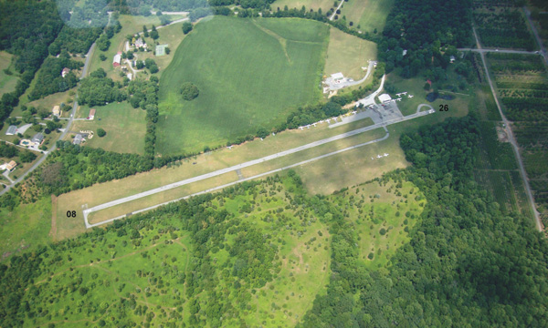

-- 2011 MARC Field Day --
June 25 to 26, 2011
-- starting at 2:00 PM local --
June 25 to 26, 2011
-- starting at 2:00 PM local --
|
|
-- 2011 MARC Field Day --
June 25 to 26, 2011 -- starting at 2:00 PM local -- |
|
 |
Davis Airport
(FAA ID: W50) 7200 Hawkins Creamery Road Laytonsville, MD 20882 All are welcomed to attend. |
HEY GANG, W3AO averaged 500 qso's per each of their ( including 8 donated) fancy ICOM rigs. We averaged 400 ( not including GOTA) which brings us up to about same 500 qso's per rig that W3AO averaged. We have much to be proud of guys and gals!!!! WHAT AN EFFORT FOR THE MARC TEAM!!! We did fabulously as a club as 2A!!!!! With all of our bonus points we definitely will score very well compared to other 2A's: Vis. satellite QSO, a la Steve Davis, our bonus point maven N3QYI, and on and on and on to include every operator and site erector who were a part of TEAM MARC. The amount of technical information exchange between all of the participants was truly astounding. You could not help to learn something new from each of the conversations which were ongoing much of the entire weekend. Thank you to the Lees for their wonderfully nutritious and tasty food which kept our spirits and sugar levels high ( Probably one of the greatest factors in our ability to sustain the superior effort we did throughout the contest). Thank you to all for your fantastic support and efforts at this year's Field Day. I am looking forward to doing it again next year and so is the airport owner!!. Best 73 to all- have a safe 4th and see you all at our next meeting on July 6th. Respectfully Phil Barsky, K3EW 2011 MARC Field Day Committee Chair
This is the weekend for the Field Day 2011. It's the most popular operating event in amateur radio, so come on out an join us. MARC will be participating in Field Day from the Davis Airport, 7200 Hawkins Creamery Road (just west of MD-108, between Laytonsville and Damascus). Here's a summary of activites (all times listed below are in EDT). June 24 (Friday) - We'll meet at Davis Airport for antenna assembly, site preparation and equipment setup. Expect to have all stations (two HF, one 6m, and the GOTA) and antennas operational by late afternoon. Test out all bands and modes. Expect station operations to continue until approx 2000 or when bands close. ==> Pizza party for dinner <== June 25 (Saturday) - We'll start around 0700 to open the stations and perform final site set up and check out of the equipment and logging systems. ==> Special hot lunch <== Full operations begin at 1400 and continue for 24 hours. We expect to optimize operations on 6/10/15/20 meters during the period until bands close. ==> Barbecue dinner <== Everyone is invited to operate as long as they wish into the night. Coffee pot will be kept percolating. We will have operations humming continuously during the contest period. We plan to optimize 40/80/160 contacts overnight and then resume 6/10/15/20 meter operations around daybreak. June 26 (Sunday) - Please come early to man the stations. ==> Pancake breakfast <== Full operations conitnue until 1400. ==> Lunch prior to station breakdown <== After lunch, we'll secure station, dismantle antennas, clean-up site, and complete all logging functions. If you're going to help with setup or takedown, please wear closed-toed shoes, work gloves and hats. Don't forget your sunscreen and insect repellant. We will be providing non-alcholic drinks throughout the whole operation. See you all there. Please bring family members to operate the GOTA station, and to learn about Amateur Radio and MARC. Looking forward to a most successful and fun-filled weekend. Best 73, Phil Barsky K3EW MARC Field Day Committee Chair
Field Day is only a week away (June 25-26)!
Here's the schedule for MARC Field Day to be held at Davis Airport.
All times listed below are in EDT.
June 24 (Friday)
----------------
1400 Meet at Davis Airport for antenna assembly, site preparation
and equipment setup.
- Expect to have all stations (two HF, one 6m, and the GOTA)
and antennas operational by late afternoon. Test out all
bands and modes. Expect station operations to continue
until approx 2000 or when bands close.
1700 We will then set up tables inside of hanger for stations,
GOTA, break areas etc.
**Pizza party for dinner**
- Drinks will be provided all day
- Please wear closed-toe work shoes, work gloves and hats
for outside work
- Sunscreen and insect repellent recommended
2000 We will secure site and return Saturday AM
June 25 (Saturday)
------------------
0700-0800 Open stations - Please come in early
**Breakfast**
0800-1330 Final site set up and check out of the equipment and logging
systems. Continue to test operations on all bands and modes.
- Special hot lunch
1330-1400 All stations humming prepared to start racking up the points.
1400-2400 Full station operations. Expect to optimize operations on
6/10/15/20 meters during the period until bands close.
- Visitors expected
- Maximum Bonus Points accumulated including making a contact
with our Satellite Station
**Barbecue dinner**
- Everyone is invited to operate as long as they wish into
the night. Coffee pot will be kept percolating. We will
have operations humming continuously during the contest
period.
June 26 (Sunday)
----------------
0000-1400 Full Station Operations
- Expect to optimize 40/80/160 contacts overnight.
- Will resume 6/10/15/20 meter operations around daybreak.
- Please come on in early to man the stations.
**Pancake Breakfast**
**Lunch prior to breakdown**
1400-1800 Secure station, dismantle antennas, clean-up site, complete
(approx) all logging functions. Please wear closed-toed shoes, work
gloves and hats.
See you all there. Please bring family members to operate the GOTA
station, and to learn about Amateur Radio and MARC.
Looking forward to a most successful and fun-filled weekend.
Best 73,
Phil Barsky
MARC Field Day Committee Chair